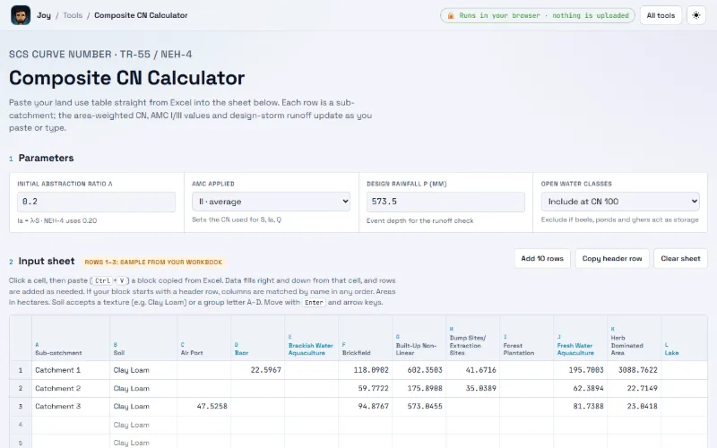

Analysis · Stable
About Composite CN Calculator
SCS curve number and runoff for every sub-catchment

What it does
Paste a land-use table straight from Excel, one row per sub-catchment, and get the area-weighted SCS curve number (TR-55 / NEH-4) for AMC I, II and III, retention S, initial abstraction, design-storm runoff, runoff coefficient and volume. Soil textures map to hydrologic soil groups, open water can count at CN 100 or be left out, and the CN lookup for Bangladesh land-cover classes is editable.
- Paste blocks from Excel; columns matched by header in any order
- Area-weighted CN for AMC I, II and III
- S, Ia (any λ), runoff Q, C = Q/P and volume per sub-catchment
- Soil texture or group A–D; Bangladesh land-cover classes built in
- Open water at CN 100 or excluded as storage
- Editable CN lookup; results copy straight back to Excel
Problem
Area-weighted SCS curve number (TR-55 / NEH-4) for every sub-catchment: paste a land-use table from Excel, get CN for AMC I, II and III, retention, initial abstraction, design-storm runoff and volume. Runs in your browser; files are never uploaded.
Method
- CN(II) = Σ(Aᵢ·CNᵢ) / ΣAᵢ (CNᵢ for the sub-catchment's soil group)
- CN(I) = 4.2·CN / (10 − 0.058·CN); CN(III) = 23·CN / (10 + 0.13·CN)
- S = 25400/CN − 254 (mm); Ia = λ·S (NEH-4 uses 0.20)
- Q = (P − Ia)² / (P − Ia + S) for P > Ia, else 0; C = Q/P
- V = Q·A·10 m³ (A in ha); with water excluded, A is the land area only
- Soil textures map to hydrologic soil groups, open water can count at CN 100 or be left out, and the CN lookup for Bangladesh land-cover classes is editable.
Data
Click a cell, then paste (Ctrl+V) a block copied from Excel. If your block starts with a header row, columns are matched by name in any order. Areas in hectares. Soil accepts a texture (e.g. Clay Loam) or a group letter A–D. CN lookup values are TR-55 analogues.
Bundled sample data
- Three built-in sample rows (Catchment 1–3), shown on first load
Validation
Not yet documented.
Limitations
Not yet documented.
How to cite
Not yet documented.
Source and documents
Not yet documented.